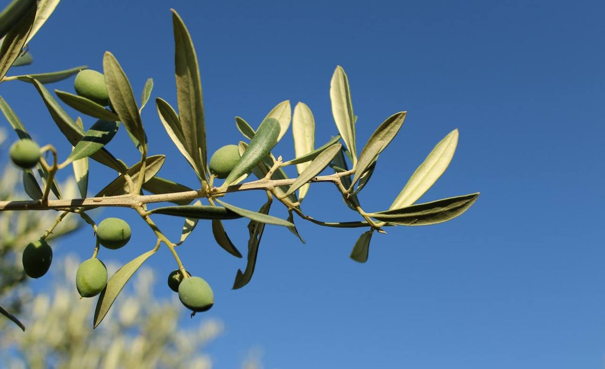
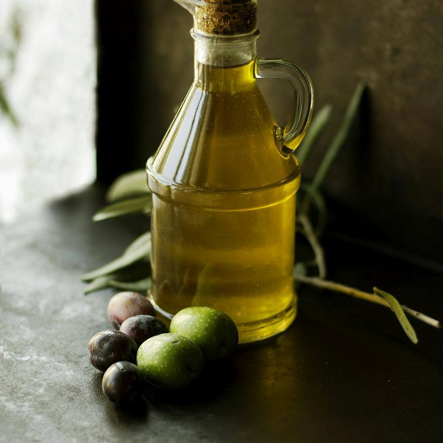
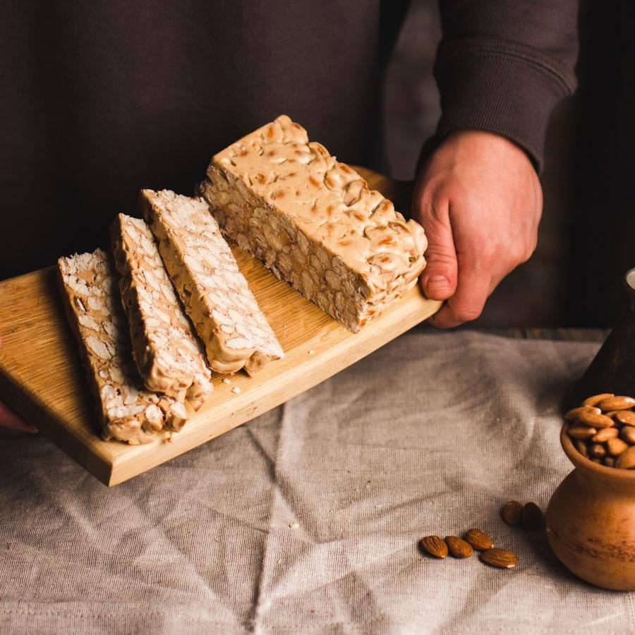
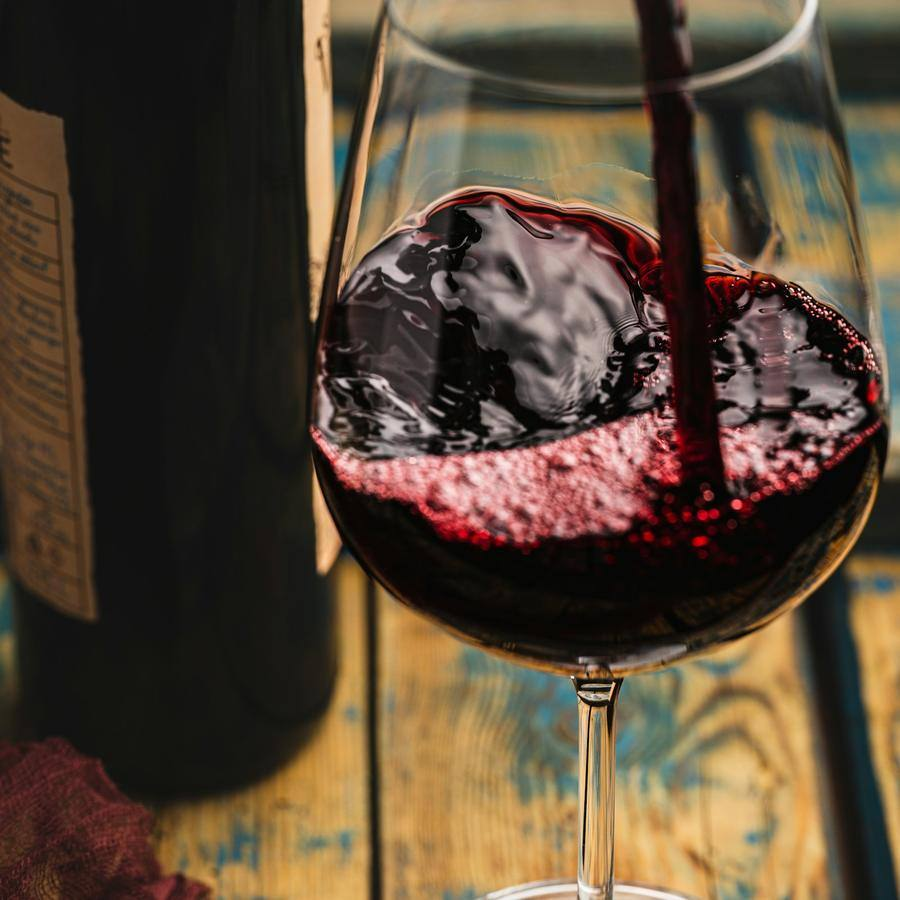

Productos de la tierra · Mercado Central, Alicante
Lo mejor de Alicante, en tu casa
Aceite de la Vall d'Albaida, turrón de Xixona, vino del Vinalopó y embutido de la sierra, elegidos uno a uno. Recoge en el puesto o te lo llevamos en el día por Alicante.



Por qué Sabores de la Terreta
Lo que nos diferencia
De productores de aquí
Conocemos a cada productor y vamos a verle.
Cestas para regalar
Montadas a tu gusto, con tarjeta y envío.
Envío en el día
Pide antes de las 13:00 y lo tienes por la tarde en Alicante.
Recoge en el Mercado
Pásate por el puesto y pruébalo antes de comprar.
Productos de la tierra
Más vendidos
Precios con IVA. Envío gratis en Alicante desde 40 €.
Aceite y conservas
Aceite de oliva virgen extra
12,50 €Botella de 750 ml, cosecha temprana.
favoritoAceitunas partidas
5,90 €Aliñadas con hinojo, tarro de 500 g.
Tomate en conserva
4,50 €De la huerta de Mutxamel.
Dulces
Turrón de Xixona
11,90 €Tableta de 300 g, IGP.
favoritoTurrón de Alicante
11,90 €Duro, con almendra marcona.
Peladillas de Casinos
6,50 €Bolsa de 250 g.
Vino

Tinto Monastrell
9,80 €D.O. Alicante, crianza.
favoritoFondillón
24 €Vino rancio de Alicante, 50 cl.
nuevoMoscatel de la Marina
8,50 €Dulce, para el postre.
Cestas
Cesta degustación
45 €Aceite, turrón, vino y embutido.
favoritoCesta grande
85 €Doce productos, para regalar.
Galería
Pásate a verlo
Fotos del local y de lo que hacemos. Pulsa para verlas en grande.
Reseñas
Lo que dicen de nosotros
Reseñas de ejemplo: en tu web van las tuyas, enlazadas a tu ficha de Google.
- Montse R.hace 2 días5 de 5
La cesta de Navidad para la familia fue un éxito. Todo buenísimo.
- Diego P.hace 1 semana5 de 5
Pedí por la mañana y por la tarde tenía el aceite en casa.
- Clara S.hace 3 semanas5 de 5
En el puesto te dejan probar y te cuentan de dónde viene cada cosa.
- Tomás V.hace 1 mes4 de 5
Muy buen producto. Un poco más caro que el súper, pero se nota.
- Julia H.hace 2 meses5 de 5
El fondillón no lo conocía y ahora no falta en casa.
Comprar
Tu pedido en tres pasos
- 1
Elige tus productos
O una cesta ya hecha.
- 2
Recogida o envío
En el puesto o en tu casa.
- 3
Paga al recibir
Con tarjeta o Bizum.
Visítanos
Dónde estamos
Horario
| Lunes | 8:00 – 14:30 |
|---|---|
| Martes | 8:00 – 14:30 |
| Miércoles | 8:00 – 14:30 |
| Jueves | 8:00 – 14:30 |
| Viernes | 8:00 – 14:30 |
| Sábado | 8:00 – 15:00 |
| Domingo | Cerrado |
Cómo llegar
- Mercado Central, planta baja, puesto 34
- Tranvía, parada Mercado
- Aparcamiento del Mercado, primera hora gratis con compra
Contacto
¿Enviáis fuera de Alicante?
Sí, a toda España en 24-48 horas.
¿Puedo montar mi propia cesta?
Sí: eliges los productos y te la preparamos con tarjeta.
¿Hacéis pedidos para empresas?
Sí, con precio especial a partir de diez cestas.
¿Se puede probar antes?
En el puesto, siempre. Pásate y te damos a probar.
Te esperamos en Mercado Central
Aceite de la Vall d'Albaida, turrón de Xixona, vino del Vinalopó y embutido de la sierra, elegidos uno a uno.
Comprar¿Quieres una web así para tu negocio?
Sabores de la Terreta es un negocio inventado: esta página es una plantilla de ejemplo. La adapto a tu negocio con tus fotos, tus precios, tus reseñas y tu forma de reservar. Pruébala tal cual: la reserva funciona, pero no envía nada a nadie.
- Carta o servicios por categorías, galería y reseñas
- Reserva o cita en pocos pasos, con aviso por WhatsApp
- Lista para el móvil, rápida y sin cookies de terceros
- Aviso legal, privacidad y cookies incluidos